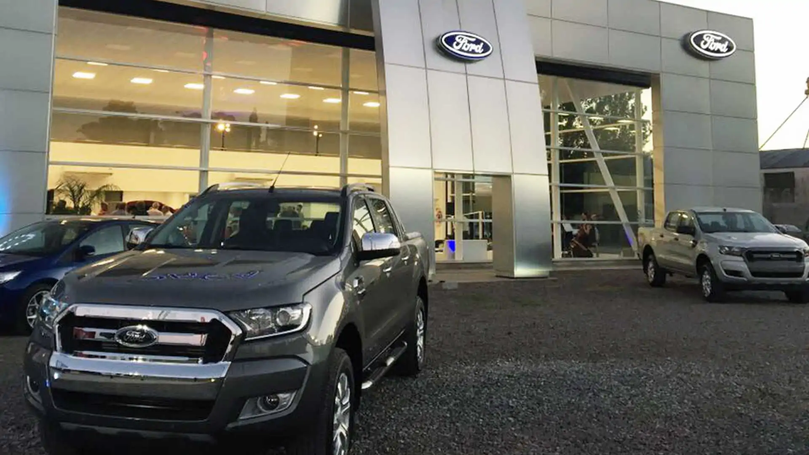
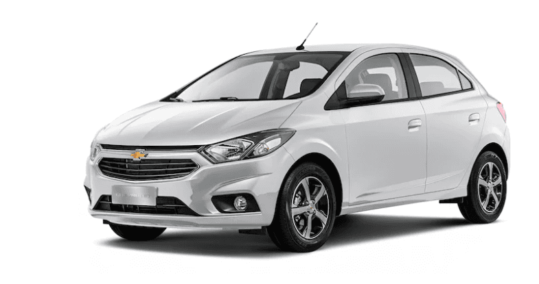

Inicio
0Km
Usados
Historia
Contacto

FIORCAR
0 Km
polo
Motor 1.6 16 valvulas.
Aribags frontales y laterales
Tope de gama
argo
Motor 1.8 Turbo.
Aire y Direccion
Computadora de abordo
onix

Motor 1.4
Aire y Direccion
llantas de aleacion
Acercate a realizar un test drive